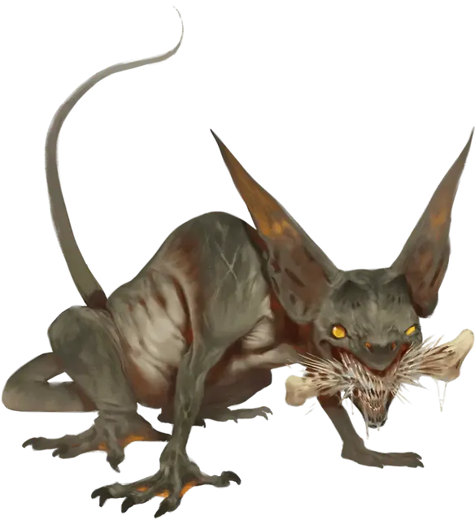

Рой гремишек
Swarm of Gremishkas
Средний рой крошечных Монстров

Класс Доспеха 12
Хиты 24 (7к6)
Скорость 25 футов
| мод | спас | ||
|---|---|---|---|
| СИЛ | 12 | +1 | +1 |
| ЛОВ | 14 | +2 | +2 |
| ТЕЛ | 10 | +0 | +0 |
| мод | спас | ||
|---|---|---|---|
| ИНТ | 12 | +1 | +1 |
| МДР | 14 | +2 | +2 |
| ХАР | 4 | −3 | −3 |
Навыки Восприятие +4
Сопротивление урону дробящий, колющий, рубящий
Иммунитет к состояниям захват, испуг, окаменение, опутанность, очарование, ошеломление, паралич, сбивание с ног
Чувства тёмное зрение 30 футов, пассивное Восприятие 14
Языки Общий
Опасность 2 (450 опыта)
Бонус мастерства +2
Особенности
Языки. Понимает Общий, но не может говорить.
Ограниченный иммунитет к заклинаниям. Рой автоматически преуспевает в спасбросках против заклинаний 3-го уровня или ниже, и броски атаки таких заклинаний всегда промахиваются по нему.
Рой. Рой может занимать пространство другого существа и наоборот, и рой может перемещаться через любое отверстие, достаточно большое для крошечной гремишки. Рой не может восстанавливать хиты или получать временные хиты.
Действия
Укусы. Рукопашная атака оружием: +4 к попаданию, досягаемость 0 фт., одна цель в пространстве роя. Попадание: 12 (3к6 + 2) колющего урона или 5 (1к6 + 2) колющего урона, если рой имеет половину своих хитов или меньше, плюс 7 (2к6) урона силовым полем.
Реакции
Перенаправление заклинаний. В ответ на бросок атаки заклинанием, который промахивается по нему, рой заставляет это заклинание поразить другое существо по своему выбору в пределах 30 футов от себя, которое он может видеть.
Описание
Гремишки — это извращенные результаты ошибок, допущенных начинающими заклинателями, стремившихся создать жизнь. В результате получаются магически нестабильные существа размером с кошку с любовью к атрибутам магии — особенно книгам заклинаний, магическим компонентам, фамильярам и тому подобному. Гремишки наслаждаются тем, что мучают использующих магию, затаив злобу на тех, кто дал им жизнь и наводняя стены домов заклинателей или округу.
Несмотря на свою звериную внешность, гремишки — хитрые существа. Они могут имитировать звуки хнычущих детей или раненых животных, чтобы заманить жертв в тесные проёмы. Хотя они предпочитают атаковать заклинателей, гремишки — беспринципные охотники и набрасываются на всё, что, по их мнению, они могут сокрушить или просто укусить.
У гремишек нестабильные отношения с магией. Заклинания, наложенные рядом с гремишкой, могут отскочить на тех, кто рядом, или вызвать взрыв монстра, его чешуйчатые куски быстро преобразуются в новых гремишек. Эти спонтанно созданные рои могут быстро превратить единственную надоедливую гремишку в стрекочущую, отражающую магию волну зубов и когтей.